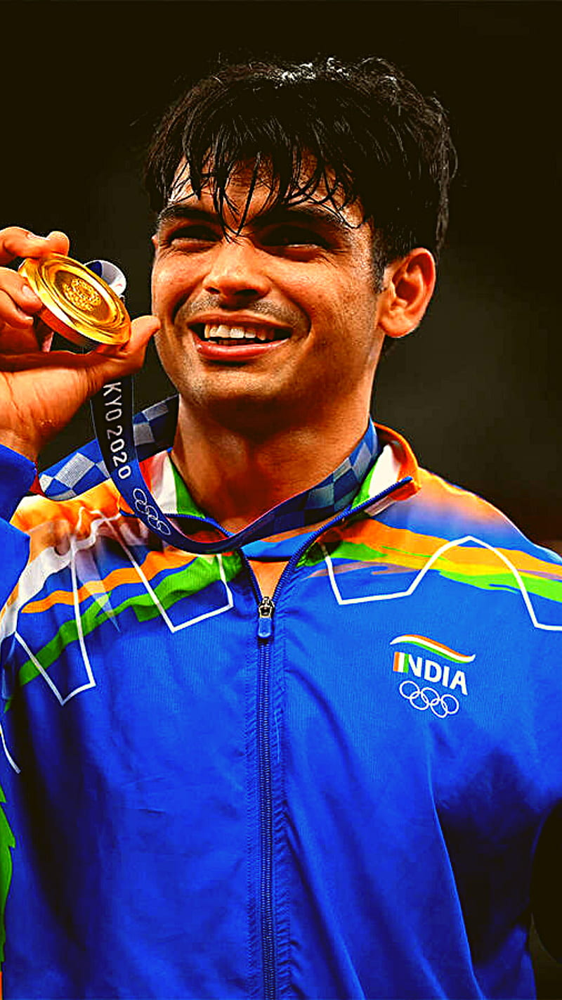
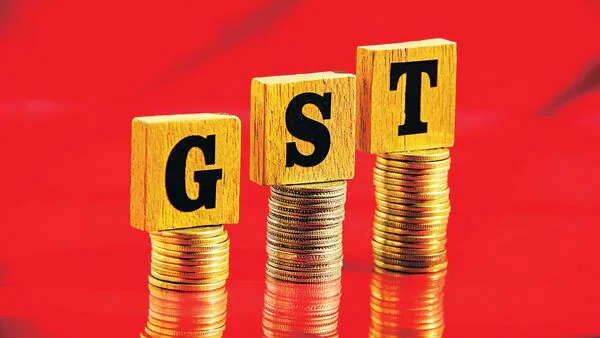
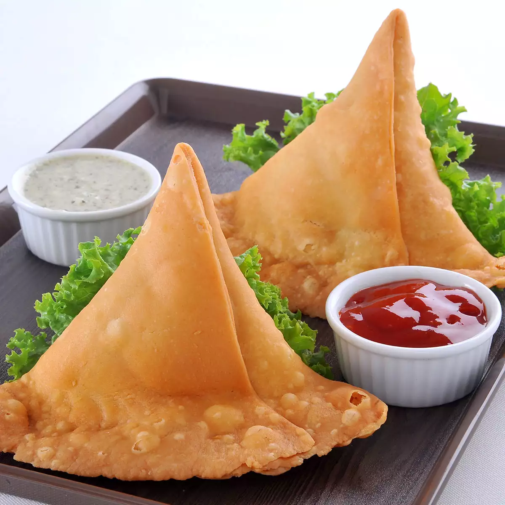
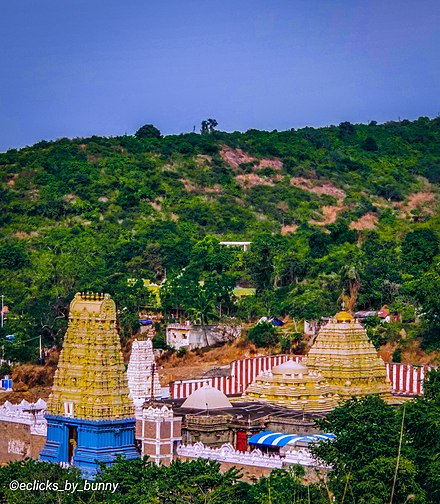

The Taj Mahal is a 17th Century riverfront mausoleum in Agra city
which was built by Mughal emperor Shah Jahan in memory of his queen
Mumtaz who died while giving birth to their 14th child. The stunning
monument - built with brick, red sandstone and white marble and
famed for its intricate lattice work.

Neeraj Chopra
The Golden boy
Subedar Major Neeraj Chopra (born 24 December 1997) is an Indian
track and field athlete. Considered as the greatest Indian javelin
thrower, he's a double medalist at the Olympics, World
Championships, and the Asian Games. He has won the Diamond League
once. Chopra won the gold medal at the 2020 Olympics, becoming the
first Asian javelin throw athlete to do so. He became the first
Asian to win a gold in javelin at the World Championships after his
win in 2023. Chopra has won gold medals in every major tournament.
He has a podium finish streak in 24 consecutive competitions, dating
back to 2020. In the 2017 World Championships in August, Chopra
finished 15th in the overall classification with a best throw of
82.26 m (269.9 ft).In the 2018 Commonwealth Games, Chopra registered
a season-best effort of 86.47 m (283.7 ft) to win the gold medal. He
became the first Indian to win the javelin throw at the Commonwealth
Games.

GST
The Goods and Services Tax (GST) is a successor to VAT used in India
on the supply of goods and service. Both VAT and GST have the same
taxation slabs. It is a comprehensive, multistage, destination-based
tax: comprehensive because it has subsumed almost all the indirect
taxes except a few state taxes.

Samosa
A samosa ( Persian: سمبوسه) from the Persian word sambosag (سنبوسگ)
(meaning 'triangular pastry') is a fried South Asian and West Asian
snack. It is a pastry with a savory filling, mostly vegetables,
spiced potatoes, onions, and peas, but also meat or fish. It is made
in different shapes, including triangular, cone, or crescent,
depending on the region. Samosas are often accompanied by chutney,
and have origins in medieval times or earlier. Sweet versions are
also made. Samosas are a popular appetizer, or snack in the cuisines
of India, Central Asia, Portugal, East Africa and their South Asian
diasporas.

Simhachalam
Sri Varaha Lakshmi Narasimha temple, Simhachalam, is a Hindu temple situated on the Simhachalam Hill Range,which is 300 metres above the sea level in the city of Visakhapatnam, Andhra Pradesh, India. It is dedicated to Lord Vishnu, who is worshipped there as Varaha Narasimha. Simhachalam is one of the 32 Narasimha temples in Andhra Pradesh which are important pilgrimage centres.